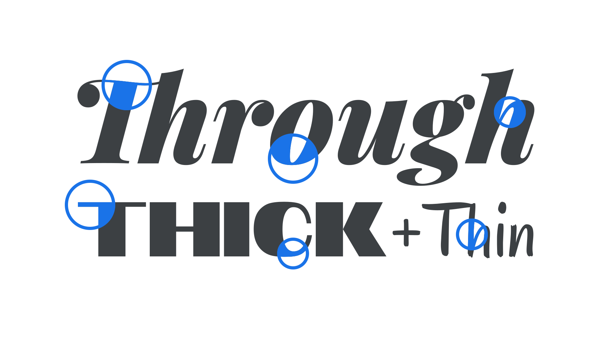

Contrast
By Google Fonts Knowledge contributors · Google Fonts Knowledge.
Original article · Source on GitHub · CC BY-SA 4.0. Text, illustrations and existing credits reproduced from the licensed Knowledge repository. Open Shelf adapted the layout and links; these adaptations are also CC BY-SA 4.0. No endorsement implied.
Contrast is the difference between the thick and thin parts of a letterform’s stroke, and creates the angle of stress within a type design. Monolinear typefaces have low stroke contrast, unlike high-contrast faces. A typical trait of a typeface with varying optical sizes is that display sizes have higher contrast than body sizes.

Serif typefaces tend to have higher contrast strokes than sans serif designs.
Contrast can be controlled and fine-tuned in variable fonts with parametric axes that adjust thick strokes (XOPQ) and thin strokes (YOPQ) independently.